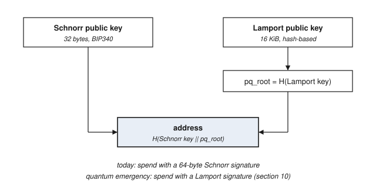
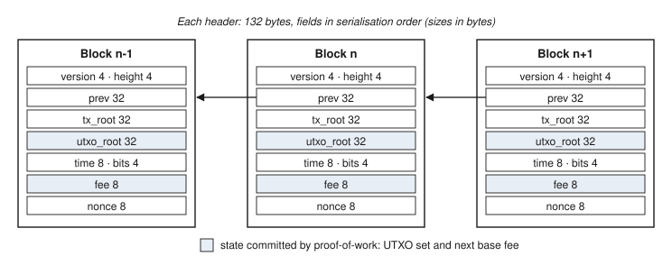

Money should outlive the machines that mint it.
Kairos keeps what seventeen years of Bitcoin proved: SHA-256d proof-of-work, unspent outputs, the chain with the most work. It fixes, from the first block, what those years exposed: a security budget headed to zero, a fee market that swings, keys a quantum computer could break, and a history every new node must replay.
What operation exposed, and what Kairos does from block 0
Every mechanism here has been deployed or analysed somewhere. The contribution is choosing them together, fixing them into consensus at genesis, and showing that they compose.
A security budget with a floor
Each block pays a fixed fraction of what remains on a 21 million curve, never less than the tail. There is no scheduled moment when a large share of hash power becomes unprofitable at once.
Cumulative issuance, first forty years
Values by year
| Years since genesis | Kairos, KRS | Bitcoin, BTC |
|---|
Computed in this page from the subsidy rule, block by block, with 365.25-day years. Before the fee burn: net growth is the tail minus what blocks burn, and it reaches zero when the average block burns 0.6 KRS.
Prepared at genesis, not at the moment of crisis
A large quantum computer breaks elliptic-curve keys. Hash functions it only weakens. Every Kairos address already holds a hash-based key in reserve, and the rules already contain the mechanism to switch to it.

How the switch works
Miners signal readiness with a bit in the block header. Once 95% of a 2016-block window signals, the change locks in, and one window later it is active: elliptic-curve spends become invalid and every coin can still be spent with its Lamport key. Nobody's coins are frozen and none are stolen.
The switch has a start height of zero and no timeout, so it stays armed for the life of the chain. For the case where miners cannot be trusted to signal in time, an emergency release can fix it at a flag-day height.
The switch has been rehearsed on testnet 2. Miners locked it in at block 4032, it activated at 6048, and from block 6054 coins moved with Lamport signatures, including a 61-coin payment that filled three quarters of a block. Every transaction was exactly the size the model predicts. That rehearsal also shows the limit: about 81 coins fit in a block, so a hash-based key can rescue coins in an emergency but cannot move a whole economy quickly. Read the report.
Every header commits to the whole state
The commitment is a MuHash over the multiset of unspent outputs: adding a coin multiplies it in, spending one divides it out. Any node maintains it as it validates, in constant time per coin.

Fast sync
A new node downloads headers, validates their work, fetches a UTXO snapshot from anyone, and adopts it only if its hash equals the commitment in a header it has verified. Issued supply is recomputed from the schedule; burned supply follows by conservation; the base fee is read from the header. History below the snapshot is never downloaded and cannot be reorganised.
Headers first
A peer's whole chain of headers is checked for work, schedule and timestamps before a single block body is requested. Bodies are then fetched in order from every peer that has them. No peer can make a node download a chain that does not carry the most work.
Join testnet 2 in three commands
Python 3.9 or newer, macOS or Linux. Your node finds the network through the built-in seed nodes. The first start creates an encrypted wallet and prints a backup code; write it down.
95.179.255.186:1933345.76.176.39:19333207.246.114.19:19333infoHeight, supply, base fee, soft-fork statebalanceYour coins; rewards unlock after 20 blocksaddressA fresh address to receive coinssend <addr> <amount>Pay someone; Lamport-signed once the switch is activeutxo exportWrite a snapshot other nodes can start fromrpc getdeploymentinfoWatch the signalling count for the quantum switchWhat it is, and what it is not yet
Testnet coins have no value and never will. There is no mainnet, no token sale, no presale and no airdrop. Anyone offering to sell you Kairos is scamming you. If a mainnet ever happens it will be a fair launch, with the software and the genesis timing published before anyone mines.
The full list of conditions for a mainnet is in LAUNCH.md. Known limitations and the private reporting channel for security problems are in SECURITY.md.